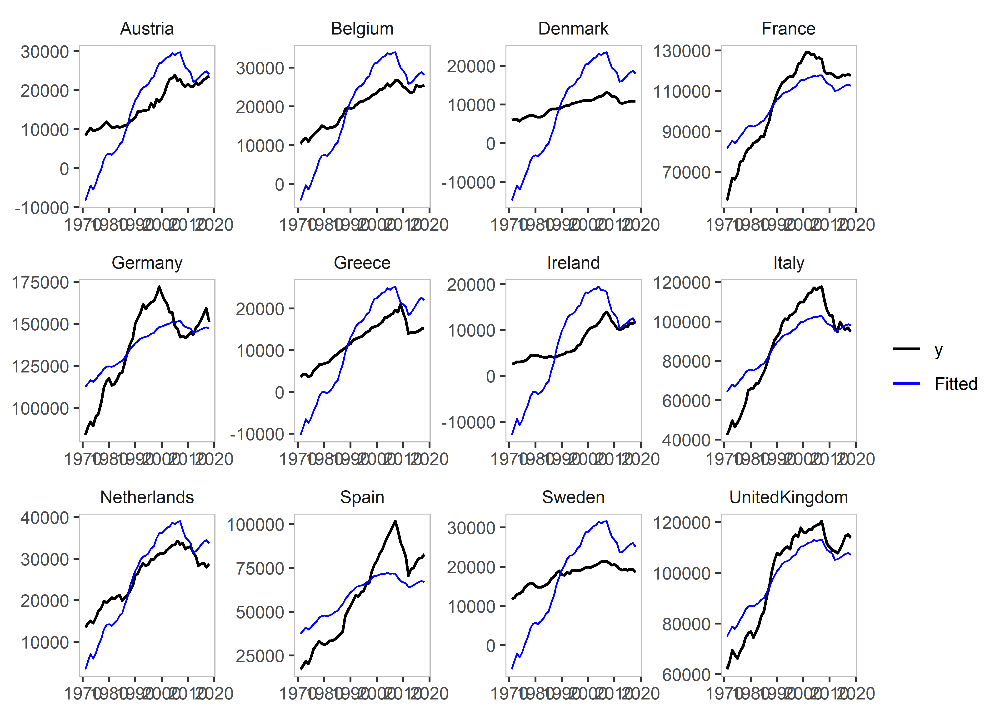

The package is a panel adaptation of the gets package see here.
This code is being developed by Felix Pretis and Moritz Schwarz. The associated working paper is published under “Panel Break Detection: Detecting Unknown Treatment, Stability, Heterogeneity, and Outliers” by Pretis and Schwarz, which is available at SSRN here and was applied to a study by Nico Koch and colleagues on EU Road CO2 emissions, which was published in Nature Energy in 2022.
Installation
You can install the released version of getspanel from CRAN with:
install.packages("getspanel")And the development version from GitHub with:
# install.packages("devtools")
devtools::install_github("moritzpschwarz/getspanel")Example
library(getspanel)
data("EU_emissions_road")
# let's subset a few countries to make this faster
subset <- c("Austria", "Belgium", "Germany", "Denmark", "Spain",
"France", "Greece", "Ireland", "Italy", "Netherlands", "Sweden", "United Kingdom")
EU_emissions_road <- EU_emissions_road[EU_emissions_road$country %in% subset, ]
is1 <- isatpanel(data = EU_emissions_road,
formula = transport.emissions ~ lgdp + lpop,
index = c("country","year"),
effect = "twoways",
fesis = TRUE,
print.searchinfo = FALSE # to save space we suppress the status information in the estimation
)
Loading required namespace: getsis1
Date: Sat Jan 28 18:02:02 2023
Dependent var.: y
Method: Ordinary Least Squares (OLS)
Variance-Covariance: Ordinary
No. of observations (mean eq.): 576
Sample: 1 to 576
SPECIFIC mean equation:
coef std.error t-stat p-value
lgdp 16166.01 3698.62 4.3708 1.509e-05 ***
lpop -20201.86 10799.14 -1.8707 0.0619766 .
idBelgium 4000.22 2640.51 1.5149 0.1304241
idDenmark -10845.73 4359.12 -2.4881 0.0131716 *
idFrance 66188.67 17508.65 3.7803 0.0001757 ***
idGermany 96272.86 20912.34 4.6036 5.282e-06 ***
idGreece 2817.26 3132.58 0.8993 0.3689070
idIreland -2658.34 6880.04 -0.3864 0.6993776
idItaly 58752.06 17821.58 3.2967 0.0010485 **
idNetherlands 8562.85 5385.59 1.5900 0.1124814
idSpain 33677.26 14651.99 2.2985 0.0219497 *
idSweden 530.17 1505.34 0.3522 0.7248433
idUnitedKingdom 74109.40 17971.66 4.1237 4.371e-05 ***
time1971 -93833.18 128577.79 -0.7298 0.4658707
time1972 -92624.47 128613.12 -0.7202 0.4717540
time1973 -91506.49 128640.52 -0.7113 0.4772111
time1974 -92809.71 128679.42 -0.7212 0.4710971
time1975 -91394.63 128722.81 -0.7100 0.4780309
time1976 -91124.39 128743.15 -0.7078 0.4794020
time1977 -89888.88 128771.65 -0.6980 0.4854738
time1978 -89589.36 128829.40 -0.6954 0.4871236
time1979 -88915.27 128852.38 -0.6901 0.4904822
time1980 -88877.13 128882.84 -0.6896 0.4907706
time1981 -89182.08 128916.46 -0.6918 0.4893980
time1982 -88663.53 128934.20 -0.6877 0.4919852
time1983 -88159.12 128943.82 -0.6837 0.4944828
time1984 -87325.32 128948.20 -0.6772 0.4985869
time1985 -87069.20 128951.95 -0.6752 0.4998592
time1986 -87107.37 128982.22 -0.6753 0.4997720
time1987 -84505.33 129007.82 -0.6550 0.5127454
time1988 -81052.83 128991.08 -0.6284 0.5300574
time1989 -78570.84 129025.01 -0.6090 0.5428309
time1990 -75690.17 129052.59 -0.5865 0.5578021
time1991 -74748.84 129094.31 -0.5790 0.5628352
time1992 -73233.68 129137.90 -0.5671 0.5709050
time1993 -72308.53 129181.74 -0.5597 0.5759077
time1994 -73875.92 129191.56 -0.5718 0.5676946
time1995 -73018.31 129151.13 -0.5654 0.5720771
time1996 -72144.60 129169.49 -0.5585 0.5767369
time1997 -72079.39 129182.02 -0.5580 0.5771182
time1998 -71319.91 129195.70 -0.5520 0.5811764
time1999 -70971.83 129234.39 -0.5492 0.5831350
time2000 -71458.66 129252.29 -0.5529 0.5806071
time2001 -71093.29 129287.58 -0.5499 0.5826458
time2002 -70620.12 129332.12 -0.5460 0.5852860
time2003 -70244.19 129386.95 -0.5429 0.5874424
time2004 -69754.87 129430.26 -0.5389 0.5901715
time2005 -70463.80 129480.18 -0.5442 0.5865447
time2006 -70448.29 129526.82 -0.5439 0.5867618
time2007 -70673.44 129581.24 -0.5454 0.5857245
time2008 -72625.71 129645.08 -0.5602 0.5756036
time2009 -73646.87 129713.53 -0.5678 0.5704511
time2010 -74469.83 129746.95 -0.5740 0.5662536
time2011 -75277.18 129769.49 -0.5801 0.5621215
time2012 -77342.82 129804.50 -0.5958 0.5515534
time2013 -76958.54 129839.27 -0.5927 0.5536376
time2014 -76505.27 129870.02 -0.5891 0.5560684
time2015 -76179.65 129898.07 -0.5865 0.5578351
time2016 -75655.80 129937.92 -0.5822 0.5606657
time2017 -75528.82 129969.34 -0.5811 0.5614182
time2018 -76549.16 129999.52 -0.5888 0.5562354
fesisAustria.1987 -14752.52 1654.35 -8.9174 < 2.2e-16 ***
fesisBelgium.1989 -12941.87 1596.28 -8.1075 4.072e-15 ***
fesisGermany.1978 18284.76 2048.76 8.9248 < 2.2e-16 ***
fesisGermany.1987 19086.84 2032.35 9.3915 < 2.2e-16 ***
fesisGermany.1998 7350.67 2158.87 3.4049 0.0007156 ***
fesisGermany.2003 -16943.32 2116.72 -8.0045 8.574e-15 ***
fesisDenmark.1988 -18253.66 1644.62 -11.0990 < 2.2e-16 ***
fesisSpain.1994 16853.70 1782.70 9.4541 < 2.2e-16 ***
fesisSpain.2003 13298.86 1734.13 7.6689 9.236e-14 ***
fesisFrance.1976 13435.71 2113.43 6.3573 4.661e-10 ***
fesisFrance.1988 15148.31 1763.04 8.5921 < 2.2e-16 ***
fesisUnitedKingdom.1986 14711.60 1686.10 8.7252 < 2.2e-16 ***
fesisGreece.1988 -10814.35 1814.16 -5.9611 4.761e-09 ***
fesisIreland.1987 -17863.87 1999.58 -8.9338 < 2.2e-16 ***
fesisIreland.1995 -8728.46 2241.13 -3.8947 0.0001118 ***
fesisItaly.1986 18109.81 1836.05 9.8635 < 2.2e-16 ***
fesisItaly.1999 5542.89 1534.77 3.6116 0.0003354 ***
fesisNetherlands.1986 -10588.43 1689.90 -6.2657 8.062e-10 ***
fesisSweden.1990 -16740.92 1560.10 -10.7307 < 2.2e-16 ***
---
Signif. codes: 0 '***' 0.001 '**' 0.01 '*' 0.05 '.' 0.1 ' ' 1
Diagnostics and fit:
Chi-sq df p-value
Ljung-Box AR(1) 273.47 1 < 2.2e-16 ***
Ljung-Box ARCH(1) 203.28 1 < 2.2e-16 ***
---
Signif. codes: 0 '***' 0.001 '**' 0.01 '*' 0.05 '.' 0.1 ' ' 1
SE of regression 3787.68635
R-squared 0.99428
Log-lik.(n=576) -5523.26673
plot(is1)Let’s explore the other plots that we can use:
plot_grid(is1)
We can plot the counterfactuals as well:
plot_counterfactual(is1, plus_t = 5)
We can plot the residuals against an OLS model:
plot_residuals(is1)
An example using coefficient step indicator saturation and impulse indicator saturation:
is2 <- isatpanel(data = EU_emissions_road,
formula = transport.emissions ~ lgdp + lpop,
index = c("country","year"),
effect = "twoways",
csis = TRUE,
iis = TRUE,
print.searchinfo = FALSE # to save space we suppress the status information in the estimation
)is2
Date: Sat Jan 28 18:04:11 2023
Dependent var.: y
Method: Ordinary Least Squares (OLS)
Variance-Covariance: Ordinary
No. of observations (mean eq.): 576
Sample: 1 to 576
SPECIFIC mean equation:
coef std.error t-stat p-value
lgdp -1309.59 5200.07 -0.2518 0.8012641
lpop -19713.06 18182.85 -1.0842 0.2788025
idBelgium 9344.72 4456.79 2.0967 0.0365039 *
idDenmark -14714.45 7266.18 -2.0251 0.0433767 *
idFrance 130800.79 30255.98 4.3231 1.847e-05 ***
idGermany 170095.59 34685.82 4.9039 1.262e-06 ***
idGreece 920.57 6102.51 0.1509 0.8801518
idIreland -24556.72 10798.40 -2.2741 0.0233701 *
idItaly 113904.80 29959.95 3.8019 0.0001608 ***
idNetherlands 23780.80 9735.94 2.4426 0.0149178 *
idSpain 77098.98 25550.27 3.0175 0.0026744 **
idSweden 4113.59 2449.85 1.6791 0.0937360 .
idUnitedKingdom 125238.32 30372.14 4.1235 4.350e-05 ***
time1971 337573.55 212025.05 1.5921 0.1119668
time1972 339667.96 212047.13 1.6019 0.1098017
time1973 341774.30 212049.80 1.6118 0.1076259
time1974 340827.37 212103.40 1.6069 0.1086908
time1975 342319.90 212178.45 1.6134 0.1072792
time1976 344453.70 212185.76 1.6234 0.1051245
time1977 346175.55 212214.20 1.6313 0.1034478
time1978 348560.87 212233.20 1.6423 0.1011282
time1979 349821.30 212246.78 1.6482 0.0999252 .
time1980 350130.80 212289.04 1.6493 0.0996936 .
time1981 349850.02 212348.93 1.6475 0.1000603
time1982 350556.90 212372.10 1.6507 0.0994150 .
time1983 351326.17 212376.83 1.6543 0.0986843 .
time1984 352617.08 212362.73 1.6604 0.0974332 .
time1985 353327.57 212347.60 1.6639 0.0967385 .
time1986 355549.70 212341.16 1.6744 0.0946539 .
time1987 357446.66 212336.68 1.6834 0.0929045 .
time1988 360407.35 212310.28 1.6976 0.0901968 .
time1989 362433.36 212303.25 1.7071 0.0883970 .
time1990 364443.78 212327.77 1.7164 0.0866864 .
time1991 365699.26 212388.28 1.7218 0.0856984 .
time1992 367440.24 212456.52 1.7295 0.0843216 .
time1993 368344.48 212537.31 1.7331 0.0836798 .
time1994 368733.81 212546.04 1.7348 0.0833671 .
time1995 369413.53 212548.84 1.7380 0.0828055 .
time1996 370723.06 212560.90 1.7441 0.0817419 .
time1997 371431.92 212552.15 1.7475 0.0811491 .
time1998 373440.00 212544.32 1.7570 0.0795123 .
time1999 374926.57 212536.25 1.7641 0.0783148 .
time2000 375183.25 212531.99 1.7653 0.0781055 .
time2001 375960.72 212575.83 1.7686 0.0775533 .
time2002 376750.81 212641.21 1.7718 0.0770244 .
time2003 377108.67 212712.58 1.7729 0.0768437 .
time2004 378138.04 212764.59 1.7773 0.0761156 .
time2005 377829.39 212835.61 1.7752 0.0764526 .
time2006 378465.72 212889.63 1.7778 0.0760340 .
time2007 378767.26 212962.49 1.7786 0.0759012 .
time2008 376797.02 213079.76 1.7683 0.0775964 .
time2009 375029.37 213241.76 1.7587 0.0792215 .
time2010 374489.45 213288.57 1.7558 0.0797191 .
time2011 373808.44 213323.35 1.7523 0.0803158 .
time2012 371578.43 213395.33 1.7413 0.0822338 .
time2013 371965.53 213458.55 1.7426 0.0820064 .
time2014 372764.83 213497.36 1.7460 0.0814085 .
time2015 373719.63 213517.09 1.7503 0.0806615 .
time2016 374587.80 213572.53 1.7539 0.0800401 .
time2017 375180.68 213606.53 1.7564 0.0796127 .
time2018 374569.33 213641.06 1.7533 0.0801515 .
---
Signif. codes: 0 '***' 0.001 '**' 0.01 '*' 0.05 '.' 0.1 ' ' 1
Diagnostics and fit:
Chi-sq df p-value
Ljung-Box AR(1) 503.70 1 < 2.2e-16 ***
Ljung-Box ARCH(1) 429.87 1 < 2.2e-16 ***
---
Signif. codes: 0 '***' 0.001 '**' 0.01 '*' 0.05 '.' 0.1 ' ' 1
SE of regression 10193.99274
R-squared 0.95699
Log-lik.(n=576) -6103.03163
plot(is2)
plot_grid(is2)
Warning in plot_grid(is2): No indicators identified in the isatpanel object. No
plot produced.and an example of Coefficient Fixed-Effect Step indicator saturation:
is3 <- isatpanel(data = EU_emissions_road,
formula = transport.emissions ~ lgdp + lpop,
index = c("country","year"),
effect = "twoways",
cfesis = TRUE,
print.searchinfo = FALSE # to save space we suppress the status information in the estimation
)
is3
plot(is3)
We can also use e.g. the fixest package to estimate our models:
is4 <- isatpanel(data = EU_emissions_road,
formula = transport.emissions ~ lgdp + lpop,
index = c("country","year"),
effect = "twoways",
engine = "fixest",
fesis = TRUE,
print.searchinfo = FALSE # to save space we suppress the status information in the estimation
)
plot(is4)